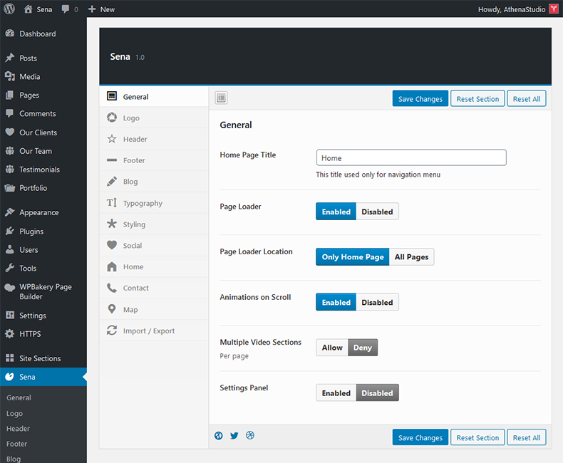

Table of Contents
- Directories
- Installation
- Theme Options
- Site Sections
- Setup Front Page
- Import Demo Content
- Blog Page
- Separate Page
- Create New Project
- Reorder Projects
- Our Clients
- Our Team
- Primary Menu
- WooCommerce
- How to Translate
- Google Maps
A) Directories
sena - Contains theme files.
help – Help file (HTML).
licensing – GPL descriptions.
psd – Preview PSD file.
B) Installation
Current documentation was created to help you with quick installation and configuration of Sena theme. Please, read it carefully to avoid most of potential problems with incorrect configuration.
To install this theme you must have a working version of WordPress already installed.
For detailed Wordpress installation instructions visit https://codex.wordpress.org/Installing_WordPress
Download the zipped package from ThemeForest and extract to your desktop. In the extracted package you will find sena.zip file which is the WordPress theme.
You can install the theme in two ways:
- WordPress: Navigate to Appearance > Themes > Add New > Upload Theme page. Select sena.zip file. Press the Install Now button to upload and install the theme.
- FTP: Extract sena.zip file (Inside there's a folder, also named sena) and upload the extracted folder to /wp-content/themes/ folder on your server. Navigate to Appearance > Themes and activate Sena theme.
Once you have activated the theme you will need to change some of the pages and media settings for optimal performance.
After that, check required plugins on Appearance / Install Plugins:
- Sena Addons
- Envato Market
- One Click Demo Import
- Redux Framework
- WPBakery Page Builder
Then, import sample data automatically via Appearance / Import Demo Data.
Or, import sample data manually (sena/demo/sena.wordpress.xml) at Tools / Import / WordPress (If not installed, press "Install Now"). Click on Run Importer. (You can load sample images by ticking the field in the opening page.)
In 3rd step, if you imported the data manually, open Site Sections. Click on Import & Export Sections button. Select (sena/demo/sena.sections.json) to import.
In 4th step, go to Settings / Reading. Select "A static page (select below)" and select Front Page as Header Style - Image Slideshow.
In 5th step, go to Appearance / Menus. Click on Manage Locations and select Main Menu as Primary Menu.
Finally, visit https://developers.google.com/maps/documentation/javascript/get-api-key and follow steps to create a Google Maps JS API key. Then, open Sena / General option. Copy the key into Google Maps JavaScript API Key field and Save.
C) Theme Options
After the installation you can make your own settings. Please, open Sena (Theme Options) and make site-wide settings:
- Select Logo – Personalization tab
- Edit Contact Information – Contact Section tab
- Set Your Location – Map Options tab
- Enter Copyrights – Footer Options tab

D) Site Sections
The template uses sections to generate front page. Go to Site Sections you will see a panel where you can create new sections.
Create a few, select needed types and fill required data. Drag-and-drop feature allows to sort sections.
After editing, click Save Sections.
E) Setup Front Page
Create a new page Pages > Add New based on the Front Page template, then click on the Publish.
Once page will be reloaded, you need to select the Section Type and enter some data.
Then click on the Update for saving changes.
Go to Settings > Reading and set the new page as front page.
F) Import Demo Content
If you want to have the same website as Live Preview of theme, you’ll need to import demo content.
There're 2 ways to import demo data:
1. One Click Demo Import
- Go to Appearance > Import Demo Data
- Click on Import Demo Data
2. Import Demo Data Manually
- Go to Tools > Import > WordPress
- Install the plugin offered and you will see a file form
- Upload the sena/demo/sena.wordpress.xml file
Import/Export Sections
- Go to Site Sections > Import & Export Sections
- Choose the sena/demo/sena.sections.json file to upload, then click Upload File and Import
G) Blog Page
Create a blog page:
- Create an empty page
- Select the Blog page template
- Publish
H) Separate Page
Creating pages is nothing new if you have even basic experience with WordPress.
We offer a few additional options in editor. Below editor you’ll find an additional metabox: Visual Subtitle.
I) Create New Project
Creating project is nothing new if you have even basic experience with WordPress and is similar to posts. You can create portfolio project which will your images or video clip. Fill the content and don’t forget to set Featured Image.
J) Reorder Projects
To move a Project, place the cursor over the block. Depending on your browser, the cursor will change to show a Hand or a Move icon. Drag and drop the block on top of another block to place it above that block.
K) Our Clients
Creating clients is similar to posts, portfolio projects. Fill the brand name and don’t forget to set Featured Image.
L) Our Team
Creating member is similar to Our Clients. Fill the content and don’t forget to set Featured Imagee.
M) Primary Menu
Sena supports custom WordPress menu. Navigate to WP Admin Appearance > Menus page and create menu. Select the newly created menu from the theme locations dropdown box Main Navigation as it mentioned on screenshot and press Save button.
N) WooCommerce
At 1st, install WooCommerce plugin by Plugins > Add New. Search for WooCommerce. After finding it, Install & Activate the plugin.

After installing it, you can import sample products by opening Products > All Products. Click on Import button. Then, select woocommerce/sena.products.csv which is included in the main zip file. Then, click on Continue to start data import.
Finally, you can add Shop page to Primary Menu by Appearance > Menus.
O) How to Translate
The translation file you can find in languages folder (/wp-content/themes/sena/languages). Edit the .po file using POEdit, use the translation field to make replacements. Read here how to do it right.
From the file menu, save file with your language name e.g de_DE.po into languages folder. It will generate both a *.po and *.mo file for your translation.
Next edit wp-config.php located in the root folder of wordpress and define the WPLANG prefix with your language name which should be similar to the translation file name.
P) Google Maps
Please, get an API key here:
https://developers.google.com/maps/documentation/javascript/get-api-key
After you get the Google Maps JavaScript API, write it to Map Options section in Sena (Theme Options).